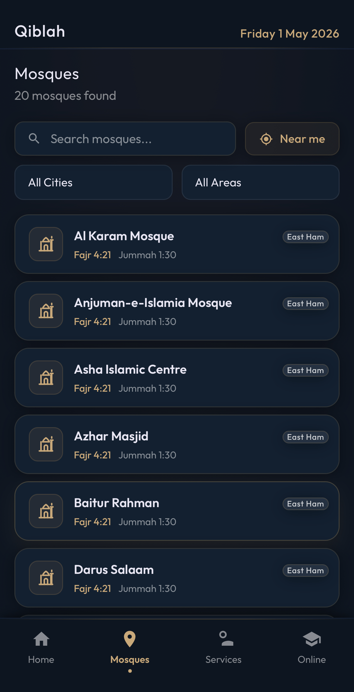
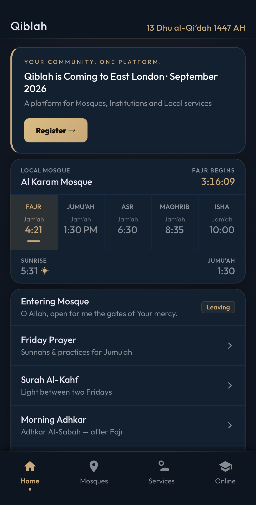
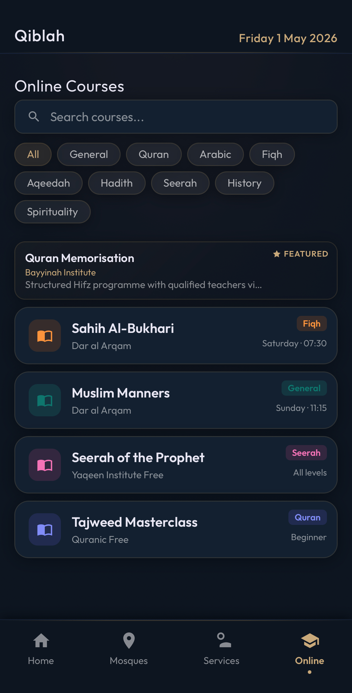
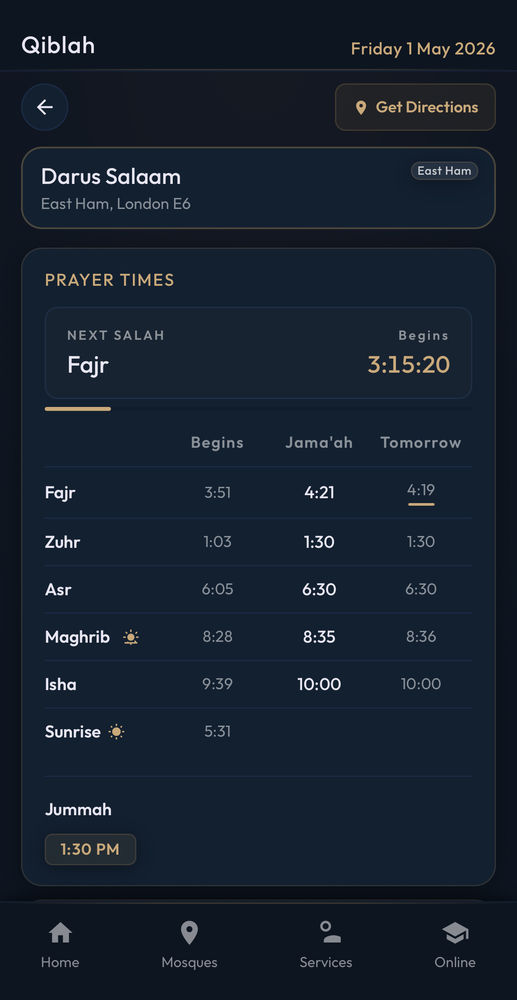
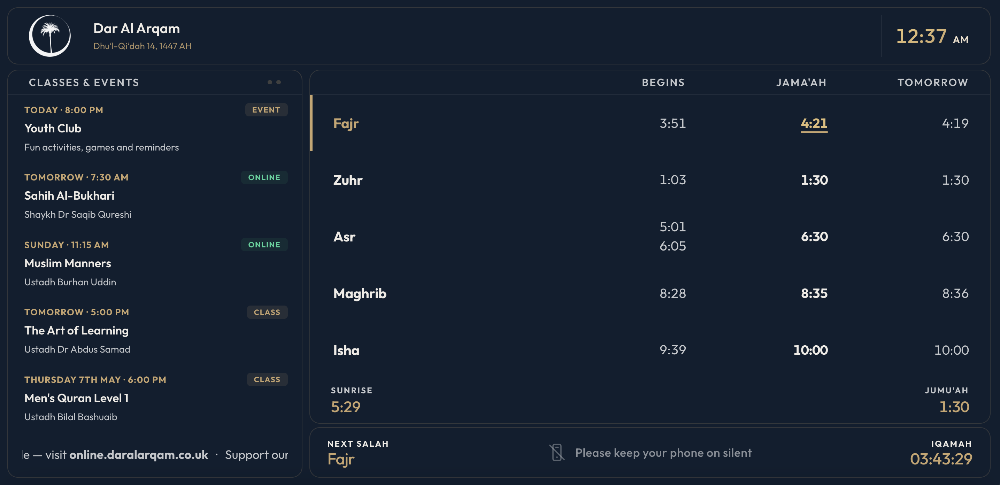

Find mosques nearbySearch by mosque, city or area, with Fajr and Jummah visible before opening a profile.
Your community, one platform
Bring your mosque onto Qiblah.
Qiblah helps worshippers find prayer times, Jummah, services, classes and online courses, while mosque teams manage updates from one simple dashboard.
LivePrayer, Jummah and announcement updates.
LocalMosque discovery for East London communities.
DisplayTV screen for prayer halls and entrances.



For worshippers
A clear place to find what your mosque offers.
Prayer times are only the start. Qiblah brings together mosque profiles, directions, services, classes, announcements and online learning in the same experience.

Prayer times and JummahProfiles show next salah logic, begins, Jama'ah, tomorrow and Jummah in a clean mobile layout.
Services and online learningClasses can appear under mosque services, while online courses sit in their own searchable tab.
For mosque teams
Update the community without rebuilding a website.
Mosque admins can keep their profile fresh with practical tools designed around weekly mosque work.
Prayer timetable
Upload CSV timetables, choose Asr option, manage Jummah and keep daily times in sync.
Announcements
Add classes, events, online links, ticker messages and recurring schedules without manual sorting.
Embeds and display
Use small widgets, full prayer cards, TV display previews and colour settings from mosque admin.

Live TV display
Prayer hall screen included.
Each mosque can have a display page for TV signage, Raspberry Pi or browser-based screens. It shows prayer times, announcements, tickers and colour branding.
Auto refreshes from the mosque profile data
Custom background, panels and accent colours
Blackout minutes and ticker controls
Works from a simple display URL
How it works
Simple setup, mosque-controlled after launch.
01Register interestSend the mosque details so Qiblah can prepare the profile and admin access.
02Set up profileAdd location, facilities, logo, prayer timetable, Jummah and public information.
03Manage updatesMosque admin edits announcements, classes, online courses, ticker and display settings.
04Go liveThe public app, embeds and display screen all reflect the same mosque data.
East London launch
Ready to bring your mosque onto Qiblah?
Register now and we can prepare your mosque profile, admin login and display screen ahead of the wider community launch.